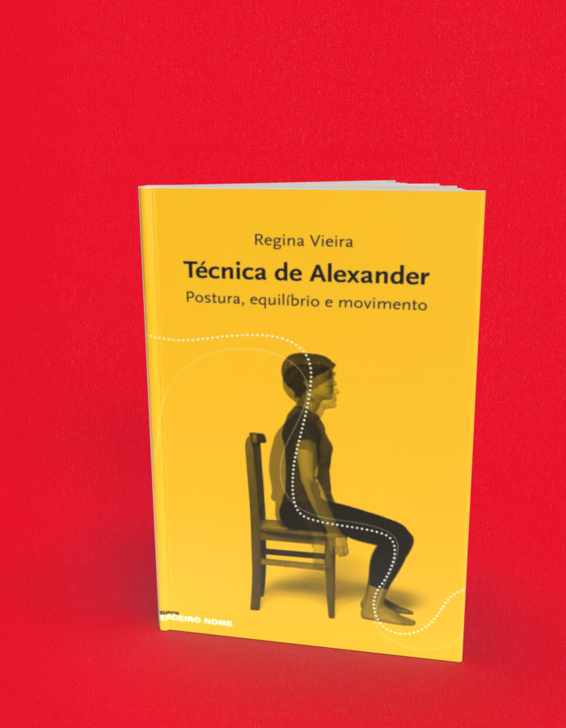

Técnica de Alexander Postura, equilíbrio e movimento
A compra acontece no site da livraria, em uma nova aba. Consulte lá os preços e a disponibilidade. Procure pelo título ou ISBN deste livro.
- Autoria / créditos
- Regina Vieira
- ISBN
- 9788578160425
- Páginas
- 136
- Formato
- 16 x 23 cm
- Acabamento
- brochura
Sobre o livro
A técnica de Alexander, de que trata este livro, foi criada por Frederick Matthias Alexander, ator cujo trabalho nasceu movido por necessidades pessoais: no auge da carreira, viu-se acometido por uma rouquidão crônica que o levou a desenvolver um estudo que relaciona a postura ao funcionamento dos mecanismos vocais e respiratórios.
Ele resolveu completamente o seu problema e, em 1930, abriu um curso de formação em Londres, que despertou a atenção dos médicos, ao notarem que o que ele fazia exercia um efeito positivo sobre a saúde geral, além de ajudar particularmente no tratamento dos problemas de coluna.
Regina Vieira , autora deste livro, formou-se na Técnica em Londres. De volta ao Brasil, participou ativamente da criação e implantação do Departamento de Artes Corporais do Instituto de Artes da Universidade Estadual de Campinas, onde trabalhou durante vários anos como professora de Consciência Corporal. Atualmente, dedica-se ao ensino e divulgação da referida técnica.
← Voltar ao catálogo